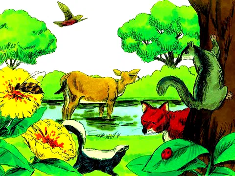
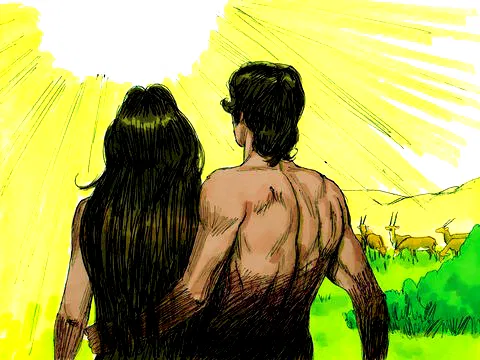

A Criação
Referência Bíblica: Gênesis 1 e 2
Você sabe como aconteceu o princípio de tudo? Olhe à sua volta, sinta o ar, veja o céu, o sol, as estrelas, o mar, a linda natureza com todos os animais... Quem será que fez tudo isso? Quem será que fez você, seus pais, sua família? Quem é o autor da vida? A Bíblia diz que Deus é o criador de todo o universo. Ele criou a Terra e tudo que existe em 6 dias. Vamos ver como tudo aconteceu? A Terra não tinha nenhuma forma, era escura e vazia. Mas Deus queria criar algo muito especial em nosso planeta. Por isso, no 1º dia Deus disse: "Que haja luz!" A luz apareceu, e então passou a existir o dia e a noite. Deus gostou do que fez, e disse que era bom! No 2º dia Deus criou o céu azul. E colocou nuvens brancas, lá em cima. Deus gostou do que fez, e disse que era bom! No 3º dia Deus mandou que as águas se ajuntassem num só lugar, formando os mares. Ordenou que aparecesse a terra seca também. A terra deveria produzir grama e todo tipo de árvores e plantas. Essas árvores dariam frutos bem saborosos, que nós conhecemos muito bem: maçãs, laranjas, morangos, bananas... Deus gostou do que fez, e disse que era bom! No 4º dia, Deus criou o sol, a lua e as estrelas e colocou-os no céu para iluminarem a terra. O sol brilha durante o dia, e a lua e as estrelinhas brilham durante a noite. Deus gostou do que fez, e disse que era bom!

No 5º dia Deus criou os peixes e todos os tipos de animais marinhos, grandes e pequenos. E com eles encheu os rios e mares. Também fez as aves para viverem na terra e muitos tipos de passarinhos para voarem pelo céu. Deus gostou do que fez, e disse que era bom! O último dia da criação foi muito especial! No 6º dia, Deus mandou que a terra produzisse animais de todos os tipos: animais domésticos como o cãozinho e o gato, animais selvagens como o leão e o elefante e os répteis, como as cobras e os jacarés... A terra se encheu de bichos grandes e pequenos.
Mas a criatura mais especial, Deus deixou para o final: o ser humano! Isso mesmo, nós somos muito importantes para Deus! O Senhor criou o homem e a mulher do pó da terra, diferentes de todos os outros animais criados e mais parecidos com Ele mesmo. Deus disse: "Façamos o ser humano à nossa imagem e semelhança para que ele cuide e governe a terra. Deus nos amou de uma forma muito especial... Ele gostou tanto do que fez, que disse que era Muito Bom!
Tudo era lindo e perfeito! A grande história de Deus tinha começado... Adão e Eva se amavam. Deus amava aos dois e a tudo que tinha criado. No 7º dia Deus descansou de todo trabalho que fez. Ele abençoou esse dia e estava muito feliz com a sua criação.
Moral da História
Aprendemos que Deus é o Criador de todas as coisas. Ele sustenta tudo no universo pelo Seu poder. Por isso sabemos que Ele é muito maior que o sol, as estrelas e todo universo. Deus é O mais forte e poderoso que existe! Ele fez-nos de forma especial porque nos ama e preparou um mundo lindo para vivermos.